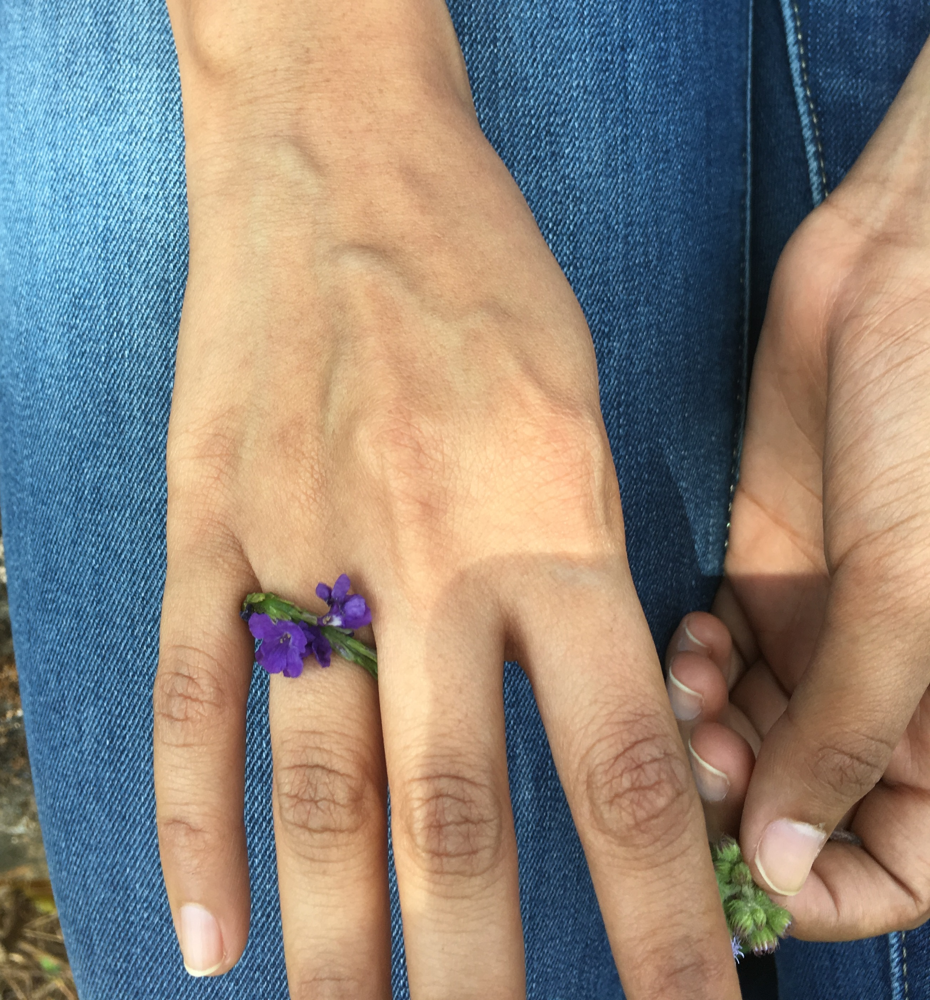

Our Story
Kiran and I met through my sister. She introduced me to him. We started talking and just like that we liked each other. A month after talking, he came to visit me all the way to India.
It was good to see each other at last. We got to spent a lot of time together and that is when he proposed to me with a wild flower. 
Our parents decided on the wedding dates and we were happy about it. But he had to go back and it was a long wait for 6 months until the wedding. We talked and skyped until then.